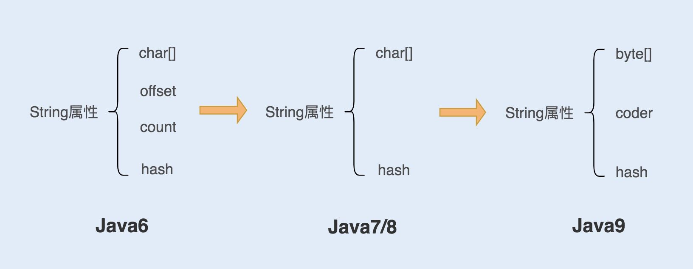
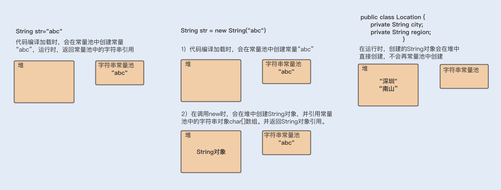

- 00 开篇词你为什么需要学习并发编程？.md.html
- 01 如何制定性能调优标准？.md.html
- 02 如何制定性能调优策略？.md.html
- 03 字符串性能优化不容小觑，百M内存轻松存储几十G数据.md.html
- 04 慎重使用正则表达式.md.html
- 05 ArrayList还是LinkedList？使用不当性能差千倍.md.html
- 06 Stream如何提高遍历集合效率？.md.html
- 07 深入浅出HashMap的设计与优化.md.html
- 08 网络通信优化之IO模型：如何解决高并发下IO瓶颈？.md.html
- 09 网络通信优化之序列化：避免使用Java序列化.md.html
- 10 网络通信优化之通信协议：如何优化RPC网络通信？.md.html
- 11 答疑课堂：深入了解NIO的优化实现原理.md.html
- 12 多线程之锁优化（上）：深入了解Synchronized同步锁的优化方法.md.html
- 13 多线程之锁优化（中）：深入了解Lock同步锁的优化方法.md.html
- 14 多线程之锁优化（下）：使用乐观锁优化并行操作.md.html
- 15 多线程调优（上）：哪些操作导致了上下文切换？.md.html
- 16 多线程调优（下）：如何优化多线程上下文切换？.md.html
- 17 并发容器的使用：识别不同场景下最优容器.md.html
- 18 如何设置线程池大小？.md.html
- 19 如何用协程来优化多线程业务？.md.html
- 20 磨刀不误砍柴工：欲知JVM调优先了解JVM内存模型.md.html
- 21 深入JVM即时编译器JIT，优化Java编译.md.html
- 22 如何优化垃圾回收机制？.md.html
- 23 如何优化JVM内存分配？.md.html
- 24 内存持续上升，我该如何排查问题？.md.html
- 25 答疑课堂：模块四热点问题解答.md.html
- 26 单例模式：如何创建单一对象优化系统性能？.md.html
- 27 原型模式与享元模式：提升系统性能的利器.md.html
- 28 如何使用设计模式优化并发编程？.md.html
- 29 生产者消费者模式：电商库存设计优化.md.html
- 30 装饰器模式：如何优化电商系统中复杂的商品价格策略？.md.html
- 31 答疑课堂：模块五思考题集锦.md.html
- 32 MySQL调优之SQL语句：如何写出高性能SQL语句？.md.html
- 33 MySQL调优之事务：高并发场景下的数据库事务调优.md.html
- 34 MySQL调优之索引：索引的失效与优化.md.html
- 35 记一次线上SQL死锁事故：如何避免死锁？.md.html
- 36 什么时候需要分表分库？.md.html
- 37 电商系统表设计优化案例分析.md.html
- 38 数据库参数设置优化，失之毫厘差之千里.md.html
- 39 答疑课堂：MySQL中InnoDB的知识点串讲.md.html
- 41 如何设计更优的分布式锁？.md.html
- 42 电商系统的分布式事务调优.md.html
- 43 如何使用缓存优化系统性能？.md.html
- 44 记一次双十一抢购性能瓶颈调优.md.html
- 加餐 什么是数据的强、弱一致性？.md.html
- 加餐 推荐几款常用的性能测试工具.md.html
- 答疑课堂：模块三热点问题解答.md.html
- 结束语 栉风沐雨，砥砺前行！.md.html
03 字符串性能优化不容小觑，百M内存轻松存储几十G数据
你好，我是刘超。
从第二个模块开始，我将带你学习 Java 编程的性能优化。今天我们就从最基础的 String 字符串优化讲起。
String 对象是我们使用最频繁的一个对象类型，但它的性能问题却是最容易被忽略的。String 对象作为 Java 语言中重要的数据类型，是内存中占据空间最大的一个对象。高效地使用字符串，可以提升系统的整体性能。
接下来我们就从 String 对象的实现、特性以及实际使用中的优化这三个方面入手，深入了解。
在开始之前，我想先问你一个小问题，也是我在招聘时，经常会问到面试者的一道题。虽是老生常谈了，但错误率依然很高，当然也有一些面试者答对了，但能解释清楚答案背后原理的人少之又少。问题如下：
通过三种不同的方式创建了三个对象，再依次两两匹配，每组被匹配的两个对象是否相等？代码如下：
String str1= "abc";
String str2= new String("abc");
String str3= str2.intern();
assertSame(str1==str2);
assertSame(str2==str3);
assertSame(str1==str3)
你可以先想想答案，以及这样回答的原因。希望通过今天的学习，你能拿到满分。
String 对象是如何实现的？
在 Java 语言中，Sun 公司的工程师们对 String 对象做了大量的优化，来节约内存空间，提升 String 对象在系统中的性能。一起来看看优化过程，如下图所示：

1. 在 Java6 以及之前的版本中，String 对象是对 char 数组进行了封装实现的对象，主要有四个成员变量：char 数组、偏移量 offset、字符数量 count、哈希值 hash。
String 对象是通过 offset 和 count 两个属性来定位 char[] 数组，获取字符串。这么做可以高效、快速地共享数组对象，同时节省内存空间，但这种方式很有可能会导致内存泄漏。
2. 从 Java7 版本开始到 Java8 版本，Java 对 String 类做了一些改变。String 类中不再有 offset 和 count 两个变量了。这样的好处是 String 对象占用的内存稍微少了些，同时，String.substring 方法也不再共享 char[]，从而解决了使用该方法可能导致的内存泄漏问题。
**3. 从 Java9 版本开始，**工程师将 char[] 字段改为了 byte[] 字段，又维护了一个新的属性 coder，它是一个编码格式的标识。
工程师为什么这样修改呢？
我们知道一个 char 字符占 16 位，2 个字节。这个情况下，存储单字节编码内的字符（占一个字节的字符）就显得非常浪费。JDK1.9 的 String 类为了节约内存空间，于是使用了占 8 位，1 个字节的 byte 数组来存放字符串。
而新属性 coder 的作用是，在计算字符串长度或者使用 indexOf（）函数时，我们需要根据这个字段，判断如何计算字符串长度。coder 属性默认有 0 和 1 两个值，0 代表 Latin-1（单字节编码），1 代表 UTF-16。如果 String 判断字符串只包含了 Latin-1，则 coder 属性值为 0，反之则为 1。
String 对象的不可变性
了解了 String 对象的实现后，你有没有发现在实现代码中 String 类被 final 关键字修饰了，而且变量 char 数组也被 final 修饰了。
我们知道类被 final 修饰代表该类不可继承，而 char[] 被 final+private 修饰，代表了 String 对象不可被更改。Java 实现的这个特性叫作 String 对象的不可变性，即 String 对象一旦创建成功，就不能再对它进行改变。
Java 这样做的好处在哪里呢？
第一，保证 String 对象的安全性。假设 String 对象是可变的，那么 String 对象将可能被恶意修改。
第二，保证 hash 属性值不会频繁变更，确保了唯一性，使得类似 HashMap 容器才能实现相应的 key-value 缓存功能。
第三，可以实现字符串常量池。在 Java 中，通常有两种创建字符串对象的方式，一种是通过字符串常量的方式创建，如 String str=“abc”；另一种是字符串变量通过 new 形式的创建，如 String str = new String(“abc”)。
当代码中使用第一种方式创建字符串对象时，JVM 首先会检查该对象是否在字符串常量池中，如果在，就返回该对象引用，否则新的字符串将在常量池中被创建。这种方式可以减少同一个值的字符串对象的重复创建，节约内存。
String str = new String(“abc”) 这种方式，首先在编译类文件时，"abc"常量字符串将会放入到常量结构中，在类加载时，“abc"将会在常量池中创建；其次，在调用 new 时，JVM 命令将会调用 String 的构造函数，同时引用常量池中的"abc” 字符串，在堆内存中创建一个 String 对象；最后，str 将引用 String 对象。
这里附上一个你可能会想到的经典反例。
平常编程时，对一个 String 对象 str 赋值“hello”，然后又让 str 值为“world”，这个时候 str 的值变成了“world”。那么 str 值确实改变了，为什么我还说 String 对象不可变呢？
首先，我来解释下什么是对象和对象引用。Java 初学者往往对此存在误区，特别是一些从 PHP 转 Java 的同学。在 Java 中要比较两个对象是否相等，往往是用 ==，而要判断两个对象的值是否相等，则需要用 equals 方法来判断。
这是因为 str 只是 String 对象的引用，并不是对象本身。对象在内存中是一块内存地址，str 则是一个指向该内存地址的引用。所以在刚刚我们说的这个例子中，第一次赋值的时候，创建了一个“hello”对象，str 引用指向“hello”地址；第二次赋值的时候，又重新创建了一个对象“world”，str 引用指向了“world”，但“hello”对象依然存在于内存中。
也就是说 str 并不是对象，而只是一个对象引用。真正的对象依然还在内存中，没有被改变。
String 对象的优化
了解了 String 对象的实现原理和特性，接下来我们就结合实际场景，看看如何优化 String 对象的使用，优化的过程中又有哪些需要注意的地方。
1. 如何构建超大字符串？
编程过程中，字符串的拼接很常见。前面我讲过 String 对象是不可变的，如果我们使用 String 对象相加，拼接我们想要的字符串，是不是就会产生多个对象呢？例如以下代码：
String str= "ab" + "cd" + "ef";
分析代码可知：首先会生成 ab 对象，再生成 abcd 对象，最后生成 abcdef 对象，从理论上来说，这段代码是低效的。
但实际运行中，我们发现只有一个对象生成，这是为什么呢？难道我们的理论判断错了？我们再来看编译后的代码，你会发现编译器自动优化了这行代码，如下：
String str= "abcdef";
上面我介绍的是字符串常量的累计，我们再来看看字符串变量的累计又是怎样的呢？
String str = "abcdef";
for(int i=0; i<1000; i++) {
str = str + i;
}
上面的代码编译后，你可以看到编译器同样对这段代码进行了优化。不难发现，Java 在进行字符串的拼接时，偏向使用 StringBuilder，这样可以提高程序的效率。
String str = "abcdef";
for(int i=0; i<1000; i++) {
str = (new StringBuilder(String.valueOf(str))).append(i).toString();
}
**综上已知：**即使使用 + 号作为字符串的拼接，也一样可以被编译器优化成 StringBuilder 的方式。但再细致些，你会发现在编译器优化的代码中，每次循环都会生成一个新的 StringBuilder 实例，同样也会降低系统的性能。
所以平时做字符串拼接的时候，我建议你还是要显示地使用 String Builder 来提升系统性能。
如果在多线程编程中，String 对象的拼接涉及到线程安全，你可以使用 StringBuffer。但是要注意，由于 StringBuffer 是线程安全的，涉及到锁竞争，所以从性能上来说，要比 StringBuilder 差一些。
2. 如何使用 String.intern 节省内存？
讲完了构建字符串，我们再来讨论下 String 对象的存储问题。先看一个案例。
Twitter 每次发布消息状态的时候，都会产生一个地址信息，以当时 Twitter 用户的规模预估，服务器需要 32G 的内存来存储地址信息。
public class Location {
private String city;
private String region;
private String countryCode;
private double longitude;
private double latitude;
}
考虑到其中有很多用户在地址信息上是有重合的，比如，国家、省份、城市等，这时就可以将这部分信息单独列出一个类，以减少重复，代码如下：
public class SharedLocation {
private String city;
private String region;
private String countryCode;
}
public class Location {
private SharedLocation sharedLocation;
double longitude;
double latitude;
}
通过优化，数据存储大小减到了 20G 左右。但对于内存存储这个数据来说，依然很大，怎么办呢？
这个案例来自一位 Twitter 工程师在 QCon 全球软件开发大会上的演讲，他们想到的解决方法，就是使用 String.intern 来节省内存空间，从而优化 String 对象的存储。
具体做法就是，在每次赋值的时候使用 String 的 intern 方法，如果常量池中有相同值，就会重复使用该对象，返回对象引用，这样一开始的对象就可以被回收掉。这种方式可以使重复性非常高的地址信息存储大小从 20G 降到几百兆。
SharedLocation sharedLocation = new SharedLocation();
sharedLocation.setCity(messageInfo.getCity().intern()); sharedLocation.setCountryCode(messageInfo.getRegion().intern());
sharedLocation.setRegion(messageInfo.getCountryCode().intern());
Location location = new Location();
location.set(sharedLocation);
location.set(messageInfo.getLongitude());
location.set(messageInfo.getLatitude());
为了更好地理解，我们再来通过一个简单的例子，回顾下其中的原理：
String a =new String("abc").intern();
String b = new String("abc").intern();
if(a==b) {
System.out.print("a==b");
}
输出结果：
a==b
在字符串常量中，默认会将对象放入常量池；在字符串变量中，对象是会创建在堆内存中，同时也会在常量池中创建一个字符串对象，复制到堆内存对象中，并返回堆内存对象引用。
如果调用 intern 方法，会去查看字符串常量池中是否有等于该对象的字符串，如果没有，就在常量池中新增该对象，并返回该对象引用；如果有，就返回常量池中的字符串引用。堆内存中原有的对象由于没有引用指向它，将会通过垃圾回收器回收。
了解了原理，我们再一起看看上边的例子。
在一开始创建 a 变量时，会在堆内存中创建一个对象，同时会在加载类时，在常量池中创建一个字符串对象，在调用 intern 方法之后，会去常量池中查找是否有等于该字符串的对象，有就返回引用。
在创建 b 字符串变量时，也会在堆中创建一个对象，此时常量池中有该字符串对象，就不再创建。调用 intern 方法则会去常量池中判断是否有等于该字符串的对象，发现有等于"abc"字符串的对象，就直接返回引用。而在堆内存中的对象，由于没有引用指向它，将会被垃圾回收。所以 a 和 b 引用的是同一个对象。
下面我用一张图来总结下 String 字符串的创建分配内存地址情况：

使用 intern 方法需要注意的一点是，一定要结合实际场景。因为常量池的实现是类似于一个 HashTable 的实现方式，HashTable 存储的数据越大，遍历的时间复杂度就会增加。如果数据过大，会增加整个字符串常量池的负担。
3. 如何使用字符串的分割方法？
最后我想跟你聊聊字符串的分割，这种方法在编码中也很最常见。Split() 方法使用了正则表达式实现了其强大的分割功能，而正则表达式的性能是非常不稳定的，使用不恰当会引起回溯问题，很可能导致 CPU 居高不下。
所以我们应该慎重使用 Split() 方法，我们可以用 String.indexOf() 方法代替 Split() 方法完成字符串的分割。如果实在无法满足需求，你就在使用 Split() 方法时，对回溯问题加以重视就可以了。
总结
这一讲中，我们认识到做好 String 字符串性能优化，可以提高系统的整体性能。在这个理论基础上，Java 版本在迭代中通过不断地更改成员变量，节约内存空间，对 String 对象进行优化。
我们还特别提到了 String 对象的不可变性，正是这个特性实现了字符串常量池，通过减少同一个值的字符串对象的重复创建，进一步节约内存。
但也是因为这个特性，我们在做长字符串拼接时，需要显示使用 StringBuilder，以提高字符串的拼接性能。最后，在优化方面，我们还可以使用 intern 方法，让变量字符串对象重复使用常量池中相同值的对象，进而节约内存。
最后再分享一个个人观点。那就是千里之堤，溃于蚁穴。日常编程中，我们往往可能就是对一个小小的字符串了解不够深入，使用不够恰当，从而引发线上事故。
比如，在我之前的工作经历中，就曾因为使用正则表达式对字符串进行匹配，导致并发瓶颈，这里也可以将其归纳为字符串使用的性能问题。具体实战分析，我将在 04 讲中为你详解。
思考题
通过今天的学习，你知道文章开头那道面试题的答案了吗？背后的原理是什么？
互动时刻
今天除了思考题，我还想和你做一个简短的交流。
上两讲中，我收到了很多留言，在此非常感谢你的支持。由于前两讲是概述内容，主要是帮你建立对性能调优的整体认识，所以相对来说重理论、偏基础。但我发现，很多同学都有这样迫切的愿望，那就是赶紧学会使用排查工具，监测分析性能，解决当下的一些问题。
我这里特别想分享一点，其实性能调优不仅仅是学会使用排查监测工具，更重要的是掌握背后的调优原理，这样你不仅能够独立解决同一类的性能问题，还能写出高性能代码，所以我希望给你的学习路径是：夯实基础 - 结合实战 - 实现进阶。